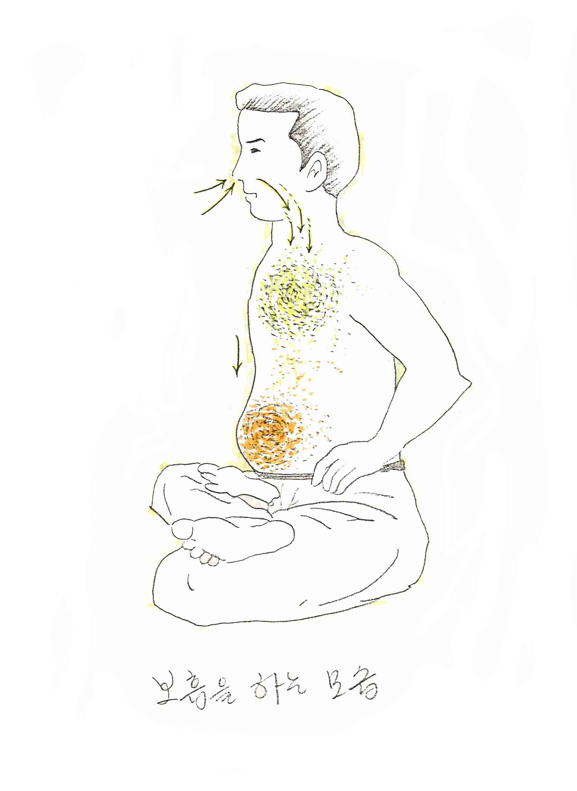

1차행공에서는 그다지 필요성을 느끼지 못하지만 2차행공 부터는 상대적으로 1차 지식(止息)의 시간이 늘어나는 것이 사실이다.
이때 정해진 시간만큼 숨을 멈추지 못하는 순간에 매번 노출된다는 것이다. 이 순간에, 숨을 멈춘 상태에서 한번 더 숨을 들이마시는 것이 보흡이다.
그리고 반대로, 호흡을 멈춘 상태에서 오히려 허탈한 느낌이 들 때도 있는데, 이때 숨을 멈춘 상태에서 한번 더 호흡을 들이마시는 것도 보흡이다.

이렇게 보흡은, 호흡량을 극복하는 차원에서 행할 수도 있지만, 호흡을 압축하여 질 좋은 생명에너지를 얻을 수도 있다는 것이다.
보흡은 꼭 필요할 때 사용해야 하며, 아무 때나 남용한다면 보흡으로 얻는 장점이 감소될 수밖에 없을 것이다. 또한, 무한정 호흡을 늘리는 것은 사실상 불가능하다는 것을 체험을 통해 알 수 있다.
그리고 보흡은 지식의 순간에만 이루어지는 것이 아니라, 흡식이나, 호식 시에도 사용할 수 있는 것이다. 그래서 필자는 보흡이란 단전호흡의 꽃이라 생각한다.
고차호흡시에 60초이상 흡식을 하는데 이것은 쉬운 일이 아닌 것이다. 미처 다 들이마시기 전에 숨이 가빠지기 일수이기 때문이다.
이런 급박한 순간에 처했을 때 당황 하지 말고, 숨을 살짝 내쉬고 다시 들이마셔 주는 방법도 보흡인 것이다. 즉, 40초를 들이마시고 살짝 숨을 내쉰 다음에, 나머지 20초를 들이마시는 것이다. 그렇게 해도 한 번에 60초 흡식을 한 것과 별로 다를 게 없다.
보흡을 여러번 사용해도 된다. 즉, 40초를 들이마시고 살짝 내쉬고, 다시 50초까지 들이쉬고 살짝 내쉬고 60초까지 들이 마시는 방법 등, 응용하자면 여러 가지 방법이 있을 것이다. 호식에서도 방법은 마찬가지이기 때문에 부연 설명은 하지 않겠다.
숨을 살짝 내쉴 때 내쉬는 시간도 흡·호식에 포함한다. 가령 흡·호식 50초에서 살짝 내쉬거나, 들이마시는 시간이 3초라면 53초 흡·호식을 한 것이다. 즉, 보흡을 하거나 말거나 신경쓰지 말고 목표한 흡·호식의 숫자를 세어나가면 된다.
이는 지식(止息)이나, 2차 지식(止息)의 경우도 동일하다.
그리고 보흡에 걸리는 시간은 그때그때 다르기 때문에 예시로 설명해 보는 것이다. 보흡에 들어가는 시간을 딱 몇초라고 정해놓지 말고 느낌상 ‘살짝’ 해준다는 기분으로 하는 것이 좋을 것이라 생각한다.
또한, 호식중에 보흡을 위해 살짝 숨을 내쉴 때 훅- 하고 숨을 내쉬면 생명에너지가 흩어져 버릴 수 있으므로 주의해야 한다.
아무튼 조금 반칙 같은 느낌이 들 수 있는데, 그렇게 생각할 필요가 없는 것이 사실 보흡이 탄생한 배경은 수련자가 매번 위기에 처할 때마다 반사적으로 위기를 타파했던 했던 방법을 글로서 표현한 것 뿐이라는 것이다. 수련자 스스로는 반사적인 일이라서 잘 알아차리지 못했을 뿐, 호흡량이 부족하면 반사적으로 일어나는 자연스러운 현상이다.
전체적으로 호흡을 놓고 볼 때 무한정 보흡을 할 수 없기 때문에 걱정할 필요도 없다. 보흡을 해도 전체적으로 발생한 열량은 동일하다고 보아야 한다.
아무튼, 보흡은 자연스러운 현상이지만, 이것을 인식하고 요령 있게 사용하면 호흡 전체가 효율적이게 된다.
그러므로 보흡은 숙달과 요령이 필요하기는 하지만, 보흡은 할 수 있는 상황이 되면 하면 좋다. 피할 이유가 없는 것이다. 이렇게 보흡에 숙달이 되면 더욱 효율적으로 호흡량을 늘릴 수 있다.
고차호흡을 수련했던 사람이 한참 수련을 쉬다가 호흡을 하면 금방 다시 고차수련을 할 수 있게 되는 것도 보흡이 없다면 불가능한 일이다. 누구나 보흡에 숙달되면 이와 같이 할 수 있는 것이다. 즉, 여유가 생기는 것이다.
다만, 보흡을 너무 남용해서 호흡 전반이 너무 경박해지지 않도록 늘 주의해야 하는 것은 유념해야겠지만 말이다. 그렇다고 너무 소극적으로 사용할 필요는 없는 것이다. 보흡은 단전호흡 전반에 윤활제로서 작용하기 때문이다.
마지막으로 ‘호흡은 본래 자연스러운 것이다’라는 말로 마무리를 하면서, 아무리 보흡이 있다고는 하지만, 절대로 호흡을 과격하게 몰고 가서는 안 된다는 점을 명심해야 한다.